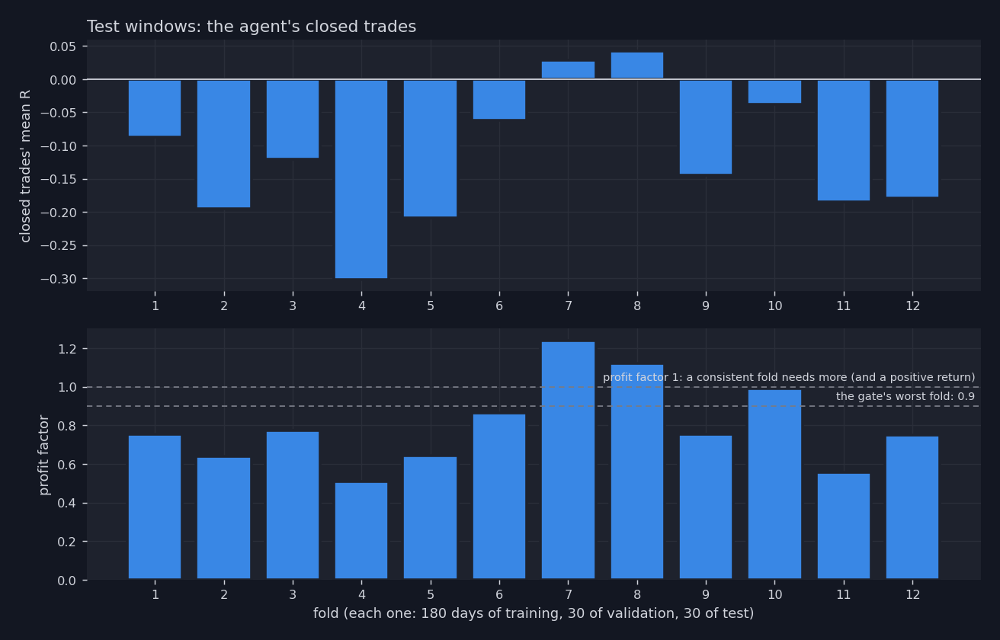
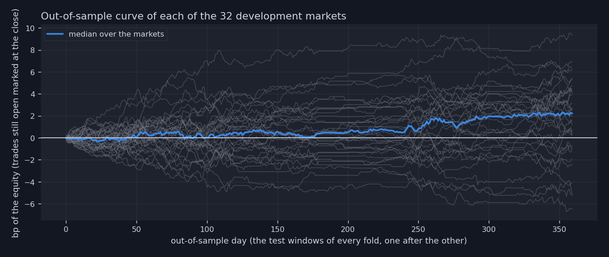
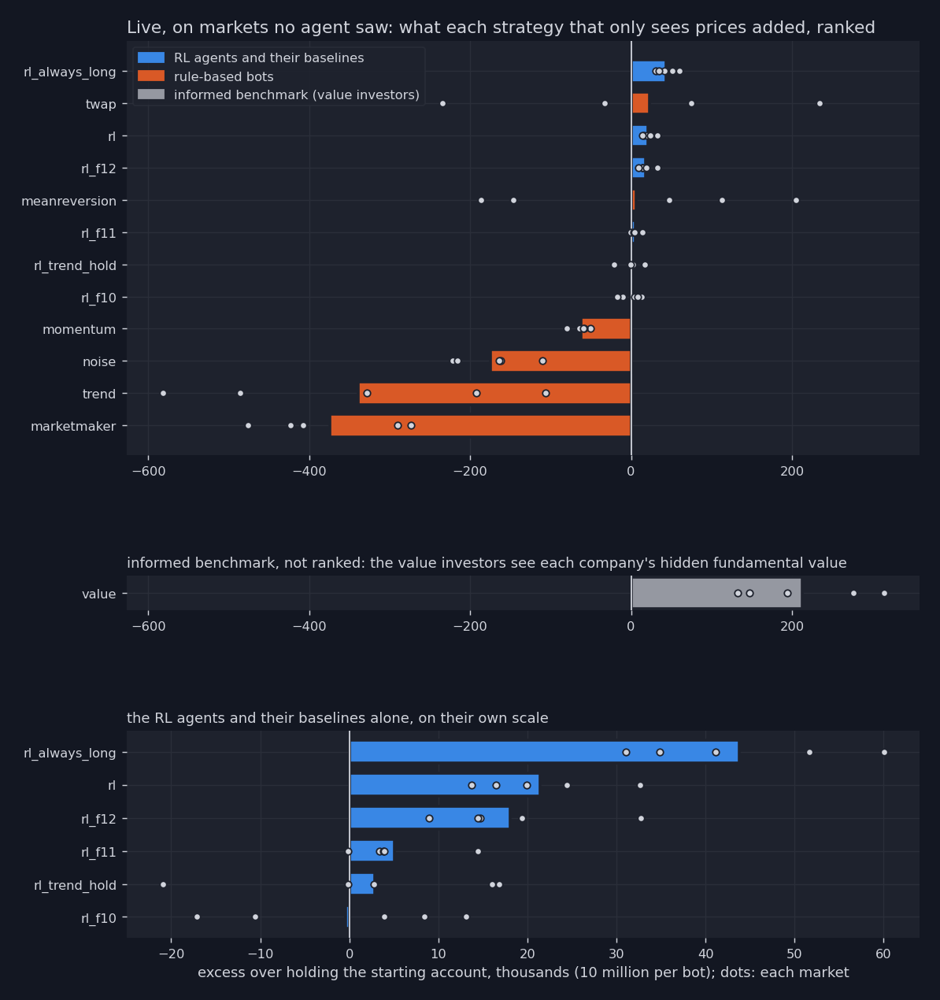
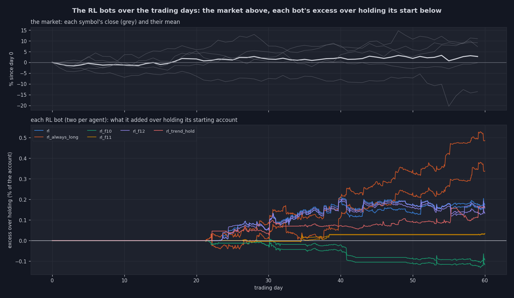
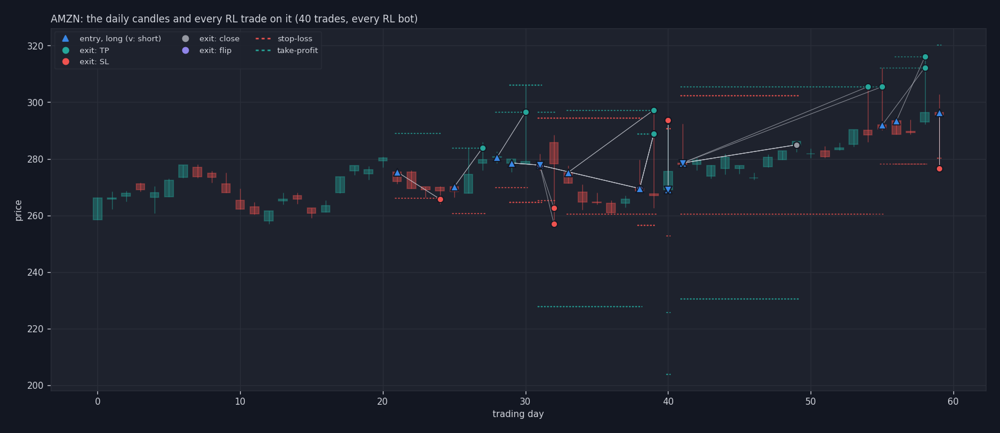
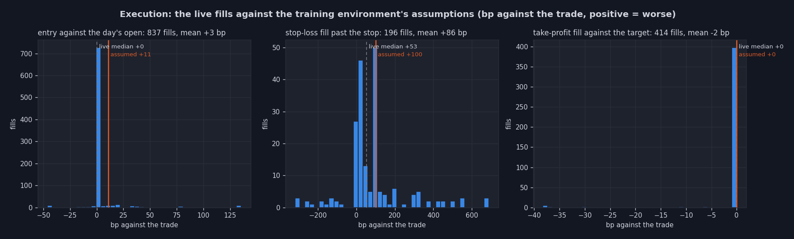
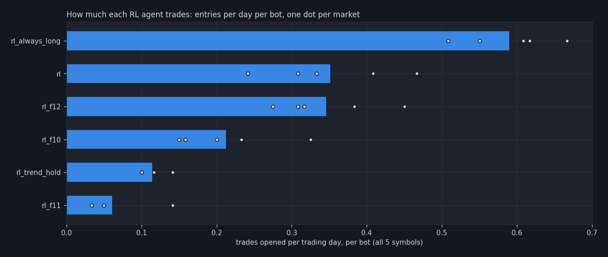

rl: the verdictTrained on Src_RL_Trading/RL_Agents/sim_days/real5_d600: 32 development markets, sealed
[433, 434, 435, 436, 437, 438, 439, 440]; judged live in rl_eval_20261030_001415.
[FAIL] folds with test return > 0 and PF > 1: 2/12 (need >= 9)[FAIL] worst fold PF 0.51 (need >= 0.9)[PASS] mean test Sharpe +2.65 (need > 0)A fold's return is its equity curve, which marks the trades still open at the end of the window at the last close; its profit factor and mean R count the closed trades only. Where the two disagree (a positive return with a profit factor below 1), the return came from trades still open, not from the agent's closed trades.

| test days | return (bp) | Sharpe | profit factor | closed trades | win rate | mean R | always long (bp) | trend-hold (bp) | |
|---|---|---|---|---|---|---|---|---|---|
| fold | |||||||||
| 1 | (234, 264) | -0.10 | -1.82 | 0.75 | 425 | 34% | -0.088 | -0.93 | -0.52 |
| 2 | (264, 294) | 0.43 | 5.20 | 0.64 | 195 | 16% | -0.195 | -0.49 | -0.25 |
| 3 | (294, 324) | 0.10 | 1.87 | 0.77 | 363 | 21% | -0.120 | -0.83 | -0.41 |
| 4 | (324, 354) | -0.03 | -0.48 | 0.51 | 248 | 17% | -0.302 | -1.01 | -0.28 |
| 5 | (354, 384) | 0.13 | 2.35 | 0.64 | 139 | 22% | -0.209 | -0.99 | -0.25 |
| 6 | (384, 414) | 0.21 | 3.78 | 0.86 | 173 | 25% | -0.062 | -0.12 | -0.31 |
| 7 | (414, 444) | 0.09 | 4.20 | 1.24 | 46 | 37% | 0.028 | -0.66 | -0.37 |
| 8 | (444, 474) | 0.10 | 3.98 | 1.12 | 89 | 29% | 0.042 | -0.61 | -0.37 |
| 9 | (474, 504) | 0.11 | 1.38 | 0.75 | 298 | 22% | -0.145 | -0.69 | -0.54 |
| 10 | (504, 534) | 0.30 | 5.76 | 0.99 | 148 | 31% | -0.039 | -0.67 | -0.36 |
| 11 | (534, 564) | 0.04 | 1.21 | 0.56 | 112 | 24% | -0.185 | -0.63 | -0.59 |
| 12 | (564, 594) | 0.34 | 4.40 | 0.75 | 291 | 23% | -0.179 | -0.55 | -0.37 |

| return (bp) | Sharpe | profit factor | trades | |
|---|---|---|---|---|
| agent | 4.93 | 1.57 | 1.12 | 1469 |
| ensemble | 2.58 | 1.34 | 1.10 | 2894 |
| always_long | -14.73 | -4.08 | 0.79 | 2732 |
| trend_hold | -7.72 | -2.35 | 0.73 | 870 |
| flat | 0.00 | 0.00 | 0.00 | 0 |
| random | -49.92 | -16.37 | 0.55 | 10645 |
Buy and hold on the sealed markets: +30.32%.

| rank | mean excess (k) | worst market (k) | best market (k) | markets above holding | markets | trades | mean_r | win_rate | |
|---|---|---|---|---|---|---|---|---|---|
| strategy | |||||||||
| rl_always_long | 1 | 43.8 | 31.1 | 60.0 | 5 | 5 | 313 | 0.749 | 0.720 |
| twap | 2 | 23.4 | -234.6 | 234.1 | 3 | 5 | <NA> | ||
| rl | 3 | 21.4 | 13.7 | 32.7 | 5 | 5 | 174 | 0.563 | 0.534 |
| rl_f12 | 4 | 18.0 | 9.0 | 32.7 | 5 | 5 | 171 | 0.576 | 0.512 |
| meanreversion | 5 | 6.7 | -186.1 | 205.2 | 3 | 5 | <NA> | ||
| rl_f11 | 6 | 5.1 | -0.2 | 14.4 | 4 | 5 | 29 | 0.445 | 0.608 |
| rl_trend_hold | 7 | 2.9 | -20.9 | 16.8 | 3 | 5 | 45 | 0.761 | 0.459 |
| rl_f10 | 8 | -0.4 | -17.1 | 13.1 | 3 | 5 | 105 | 0.051 | 0.326 |
| momentum | 9 | -62.4 | -79.3 | -50.7 | 0 | 5 | <NA> | ||
| noise | 10 | -174.6 | -221.1 | -110.3 | 0 | 5 | <NA> | ||
| trend | 11 | -338.7 | -581.9 | -106.0 | 0 | 5 | <NA> | ||
| marketmaker | 12 | -373.8 | -476.1 | -273.4 | 0 | 5 | <NA> |
| mean excess (k) | worst market (k) | best market (k) | markets above holding | markets | trades | mean_r | win_rate | |
|---|---|---|---|---|---|---|---|---|
| strategy | ||||||||
| value | 213.0 | 132.4 | 314.1 | 5 | 5 | <NA> |
The value investors see each company's hidden fundamental value, the random walk that moves the prices, which no other bot and no agent sees: they trade on the news before it is in the price. Their excess is what knowing the value is worth, an upper bound, not a strategy the RL agent could match from prices alone.
The excess is what a strategy added beyond holding its starting account (half in stock): the raw P&L of each market's report is mostly the market's own rise.
How did each RL bot's account move, day after day (seed_42)? Its excess over holding its starting account, the market above.

Where did they trade (seed_42, the symbol with the most RL trades)? Every entry, its stop and target, its exit by reason.

Does live match training? Every RL fill of the 5 markets against the environment's assumptions: an entry costs half the spread before the close plus 5 bp (11 bp here), a stop-loss 100 bp past the stop, a take-profit its target.

How much does each agent trade? Its entries per trading day per bot (orders per intraday decision would need the intraday bot, not built).
